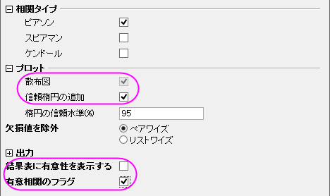
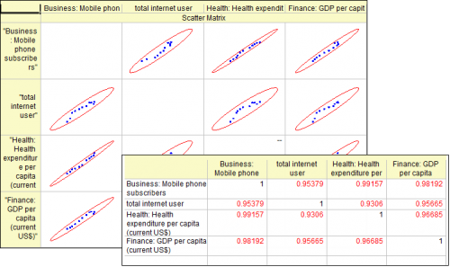
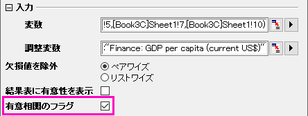
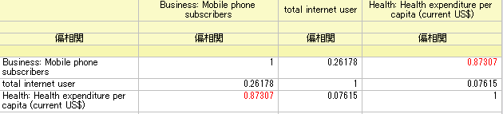

偏相関係数
サマリー
偏相関係数は、1つまたはそれ以上の制御変数の影響を除外した後に、2つの不規則な変数間の線形な関係性を測定する為のツールです。
学習する項目
このチュートリアルでは、以下の項目について説明します。
- 実際の例を使った、originでの偏相関の実行方法
- 算出された結果の読み取り方
ユーザストーリー
我々は、2000年から2010年までの、国ごとの11の指標（医療費、GDP、人口等）を含んだ公のデータをワールドバンクから入手しました。インターネットの利用、携帯の利用、米国での医療費の関係性を学習します。
ピアソンのＲで関係性を検出する
このチュートリアルは、チュートリアルデータプロジェクト（<Origin EXE フォルダ>\Samples\TutorialData.opj）と関連しています。
- Tutorial Data.opjを開き、Partial Correlation CoefficientフォルダのブックPartial Correlation Coefficientをアクティブにします。
- ソースデータのSheet1 をアクティブにします。2000年から2010年までの米国のデータを入手するために、既にデータフィルタを掛けています。
- Mobile phone subscribersとTotal internet users及び、 Health expenditures per capita と GDP per capitaの関係性を視覚的に検出するために、まず相関係数ツールは使われます。
- Ctrl キーを押してCol(E)、Col(U1)、Col(H) とCol(S)を選択します。
- メインメニューの統計：記述統計：相関係数を選択します。
- 開いたダイアログで、プロットのブランチにある、散布図を選択し、信頼楕円の追加のボックスにチェックを入れます。結果表に有意性を表示するのチェックを外し、有意相関のフラグのボックスにチェックを入れます。
- 
- ピアソンの相関係数と散布図行列から、次の内容が分かります。
- 散布図データはおおよそ線形になっている。
- 信頼楕円の形状は細くなっている。
- 全てのピアソンの相関係数は赤色にフラグされている。
- 個々のピアソン相関係数は0.9よりも大きい。
- Mobile phone subscribersとTotal internet users及び、Health expenditures per capita とGDP per capitaの間には、強い相関性があることが表れている。
- 
偏相関係数で実際の関係性を明らかにする
Mobile phone subscribersとTotal internet users及び、 Health expenditures per capita は強く相関していて、GDP per capitもこれら3つの値に影響することが分かっています。GDP per capitaの影響を除外した後に、3つの指標の関連性を測定します。
- ソースデータのSheetをアクティブにします。Ctrl キーを押しながら、Col(E)、Col(U1) 、Col(H) を選択します。
- メインメニューから統計：記述統計：偏相関係数」を選択します。
- 開いたダイアログで、3つの選択された列は変数として自動的に選択されています。
- GDP per capitaの影響を除くために、 Col(S) を 制御変数に設定します。Flag Significant Correlations のチェックボックスにチェックを入れます。
- 
- PCorr1のシートに移動します。このシートには、GDP per capitaの影響を除いた後の、偏相関係数が含まれています。ここから次のことが分かります。
- Mobile phone subscribersとHealth expenditures per capita だけが明らかに関連しています。（Partial Corr の値が赤色にマークされています）しかし、前にピアソンのＲで示した時よりも、実際の相関性は強くありません。(偏相関 = 0.87307 対Pearsonの相関 = 0.99157).
- Mobile phone subscribersとTotal internet users の偏相関係数は0.26178に減少しています。これらは相関していないことが明らかです。
- Total internet users と Health expenditures per capita が相関している根拠は示されていません。 (Partial Corr = 0.07615), 以前に得たピアソンのＲは 0.96685でした。
- 
結論
なぜこのように結果が異なるのでしょうか？他の3つの指標間の GDP per capita のピアソンのＲに着目すると、GDP per capita が3つの値に影響していることが分かります。たとえ、Total internet users と Health expenditures per capita及び、Total internet users と Mobile phone subscribersの間に、相関性がなかったとしても、"誤った相関性”はGDP per capitaの影響により、ピアソンのＲによって未だに表れてきます。偏相関係数は、相関する制御変数の影響を無くすことで、2つのファクターの真の関係性について検査する、便利な機能です。統計はさまざまな相互関係の現象が研究される実験のために有用です